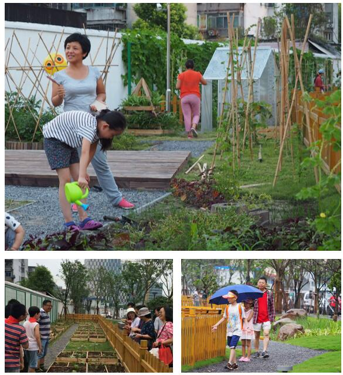

首页
畸零空间定义
改造流程
街道给设计师
畸零空间的分类
畸零空间设计导则
设计师给街道
已完成案例
home
首页
create
畸零空间定义
compare_arrows
改造流程
nature_people
街道给设计师
format_list_bulleted
畸零空间的分类
highlight
畸零空间设计导则
streetview
设计师给街道
done_all
已完成案例
menu
选择您想要的设计方案
选择畸零空间大小
将决定生成的畸零空间设计大小
大型(50㎡以上)
中型(20~50㎡)
小型(20㎡以下)
选择畸零空间形状
将决定畸零空间设计结果图的形状
正方形
长方形
线形
圆形
半圆形
选择畸零空间形态
将决定畸零空间设计的形态
对畸零空间的形态分类不了解？
点击此处
open_in_new
查看我们的畸零空间形态的定义
线性
散点
团块
选择畸零空间的d/L
我也不太清楚这是什么
楼间
桥体
开阔地
选择畸零空间的属性
畸零空间成为畸零空间的原因
对畸零空间的形成原因不了解？
点击此处
open_in_new
查看我们的畸零空间分类
商业摊地
休闲空地
街头文化
人员逗留
废弃空地
选择设计使用年限
将决定选取的材料寿命
两年以下
两年到五年
五年到十年
十年以上
选择畸零空间场所
将决定畸零空间设计方式
室内
室外
选择畸零空间位置
将根据区域选择合适的畸零空间设计风格
杨浦区
浦东新区
嘉定区
黄浦区
徐汇区
宝山区
奉贤区
静安区
普陀区
虹口区
闵行区
金山区
松江区
青浦区
长宁区
崇明县
选择畸零空间所在环境
将决定畸零空间设计风格
商业圈
居住区
选择大致的预算
将决定使用的材料价格
五万元以下
五万元至十万元
十万元至二十万元
二十万元以上
选择畸零空间需要的功能（多选）
将决定畸零空间设计的功能
绿化
社交
健身
文化
市场
艺术
农园
互动
生成设计方案
生成的设计方案
集绿化和社交于一体的畸零空间，社区农园是一个很好的设计。居民可以参与到农园的种植之中，创造一个绝佳的互动空间。同时配有小型活动室，增强社交功能。
采用该方案并发布
找到的相似案例

创智农园
将建筑废料堆放处改造成社区花园
详情